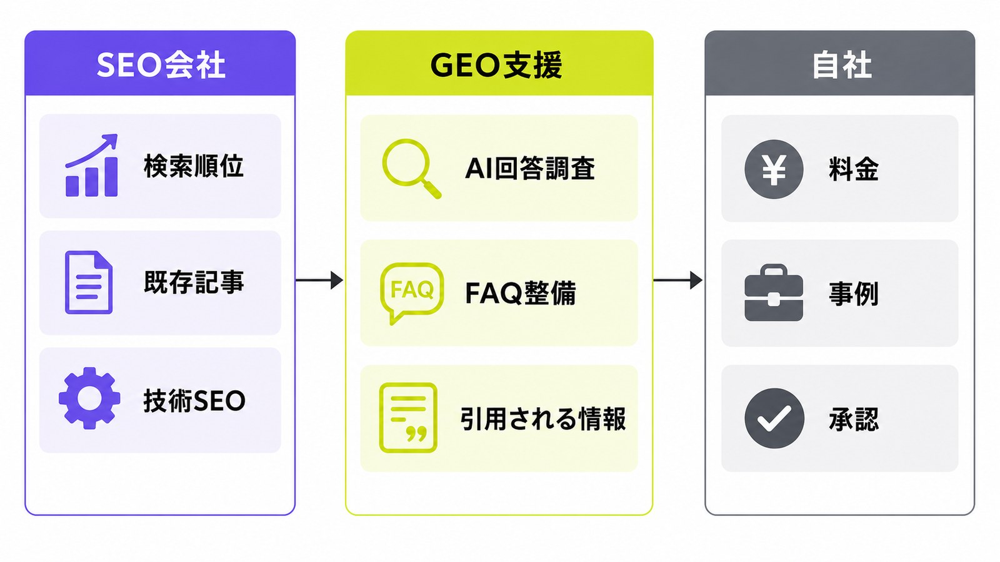
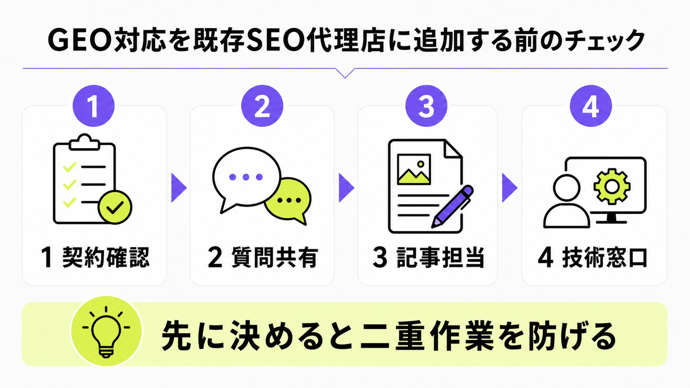
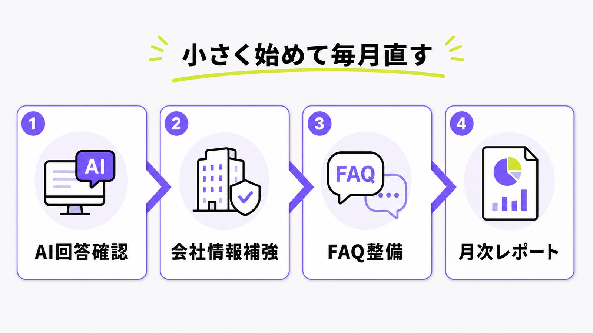

SEO会社に依頼中でもGEO対策は追加できる？役割分担と見直し方を解説

SEO会社にすでに依頼している企業でも、GEO対策は追加できます。大事なのは、今のSEO会社をやめるかどうかではなく、検索順位を伸ばす仕事と、AI回答に選ばれやすくする仕事を分けて考えることです。
GEO対策は、ChatGPT、Google AI Overviews、Perplexityなどで自社名や自社ページが回答に出やすい状態を作る取り組みです。SEOと重なる部分も多いので、既存のSEO記事、内部リンク、Search Consoleデータ、技術改善をそのまま活かせます。
この記事では、「SEO会社に依頼中だけど、AI検索対策も足したい」という方向けに、役割分担、契約確認、最初に直すページ、AIMAに相談する場合の進め方をわかりやすく整理します。
目次

SEO会社に依頼中でもGEO対策は追加できる
結論から言うと、SEO会社に依頼中でもGEO対策は追加できます。むしろ、既存のSEO施策がある会社ほど、検索データ、記事資産、内部リンク、改善済みの技術設定を使えるため、ゼロから始めるより進めやすい場合があります。
既存SEO会社を続けたまま追加できる
今のSEO会社をすぐ解約する必要はありません。SEO会社が検索順位、既存記事、テクニカルSEOを見ているなら、その土台はGEOでも役に立ちます。追加する側は、AI回答でどんな質問に自社が出ているか、競合がどの情報で引用されているか、どのページに料金・事例・FAQを足すべきかを見ます。つまり、重なる仕事を奪わないように分ければ、同時に進められます。
注意点は、連絡窓口を一つにすることです。SEO会社、GEO支援会社、自社担当者が別々に指示を出すと、同じページを二重に直したり、方針がぶれたりします。最初に「誰が提案し、誰が承認し、誰が実装するか」を決めておくと、余計な摩擦を避けられます。
GEOはSEOの別物ではなく検索体験の延長
GEOは、SEOと完全に別の魔法ではありません。Googleも、生成AI検索への最適化は検索体験への最適化であり、SEOの延長として見る考え方を示しています。だから、既存のSEO会社がやっているキーワード設計、ページ改善、内部リンク、構造化データは無駄になりません。GEOで足すべきなのは、AIが答えに使いやすい情報です。
たとえば、検索順位は取れているのにAI回答で社名が出ない場合、記事の量より「比較される理由」「料金」「対象者」「実績」「よくある質問」が足りないことがあります。SEOの順位を見る目と、AI回答で引用される材料を見る目を合わせると、改善の優先順位が分かりやすくなります。
“still SEO”
出典：Google Search Central「Optimizing your website for generative AI features on Google Search」
SEO会社が持つ資産を使える
SEO会社がすでに作った記事、検索順位レポート、Search Consoleの分析、競合調査、サイト改善メモは、GEO対策でも使えます。特に、表示回数はあるのにクリックが弱いキーワード、順位が2〜20位で伸びしろがあるページ、問い合わせ前に読まれる記事は、AI回答でも見直す価値があります。GEOでは、既存SEO資産を捨てずに再利用します。
今回の候補も、過去のSearch Console控えで「SEO会社 GEO対策 併用」に近い意図が残っていたことから選びました。検索する人は、会社を乗り換えたいだけではなく、今の委託先を活かしながらAI検索への対応を足せるかを知りたい状態です。
SEO会社とGEO支援会社の役割分担
役割分担は、難しく考えすぎなくて大丈夫です。SEO会社は検索順位と既存SEO資産、GEO支援会社はAI回答での見え方と不足情報、自社は承認と社内情報の提供を担当すると整理しやすくなります。
SEO会社が担当しやすい仕事
SEO会社が担当しやすいのは、検索順位の改善、既存記事のリライト、内部リンク、インデックス確認、サイト構造、Search Console分析です。これらはGEOでも土台になります。すでにSEO会社がページ改善を回しているなら、その流れを止めず、AI検索で必要な追加情報を入れてもらうのが自然です。SEO会社には検索の土台管理を任せると整理できます。
ただし、SEO会社がGEOやLLMOをまだ深く扱っていない場合もあります。その場合は責めるのではなく、「AI回答での表示確認」「AIに引用されやすいFAQ」「LLMO向けの効果測定」だけを別の支援会社に足す形が現実的です。
GEO支援会社が足すべき仕事
GEO支援会社が足すべき仕事は、AI回答での露出確認、質問設計、引用元の確認、競合がAIに選ばれる理由の整理、会社情報・料金・事例・FAQの補強です。SEOの順位表だけでは見えない「AIが答えに使う材料」を見ます。重要なのは、AI用語を並べることではなく、自社が選ばれる理由をページ内に作ることです。
たとえば、AIに「中小企業向けのGEO対策会社」を聞いたとき、月額費用、相談範囲、契約期間、記事作成の有無、実装支援の有無が見えない会社は比較に入りにくくなります。GEO支援では、そうした不足を本文、FAQ、表、内部リンクで補います。
自社が担当しないと進まない仕事
外注先だけでは進まない仕事もあります。自社は、料金、契約条件、事例、顧客のよくある悩み、営業でよく聞かれる質問、強みの言語化を担当します。GEOでは、外から見える情報の信頼性が大切なので、社内の一次情報がないと薄い記事になりやすいです。自社は判断材料の提供を担当すると考えてください。
AIMAが支援する場合も、毎回長い打ち合わせをする必要はありません。営業資料、よくある質問、提案書、料金表、既存記事、過去の問い合わせ内容を共有してもらえれば、記事作成や既存ページ修正に落とし込みやすくなります。
| 担当 | 主な役割 | 注意点 |
|---|---|---|
| SEO会社 | 検索順位、既存記事、内部リンク、技術SEO、Search Console分析 | AI回答での見え方まで担当範囲に入っているか確認する |
| GEO支援会社 | AI回答調査、質問設計、引用されやすい情報補強、FAQ整備 | SEO会社の作業と重複しないよう修正範囲を決める |
| 自社 | 料金、事例、強み、営業質問、承認、社内情報の提供 | 誰が最終判断するかを先に決める |

追加前に確認すること
GEO対策を追加する前に、契約、質問設計、制作担当、技術修正の窓口を確認します。ここを飛ばすと、良い提案でも実装されず、レポートだけ増えて終わることがあります。
最初に契約と作業範囲を見る
まず、今のSEO会社との契約を確認します。記事作成、既存記事修正、内部リンク、構造化データ、CV導線、アクセス解析、月次レポートのどこまでが範囲かを見ます。もし契約上、別会社の編集や実装に制限があるなら、先に調整が必要です。最初に見るべきなのは、誰が触ってよい範囲です。
契約確認は、相手を疑うためではありません。SEO会社が作った方針を壊さず、GEO対策を足すためです。たとえば、記事タイトルや内部リンクはSEO会社、FAQ追加とAI回答調査はGEO支援会社、公開承認は自社という形にすると、作業が進みやすくなります。
キーワードではなく質問を共有する
GEO対策では、キーワードだけでなく「見込み客がAIに聞く質問」を共有します。たとえば「SEO会社に依頼中でもGEO対策を追加できる？」「今のSEO会社と何を分担すべき？」「AI検索で社名を出すには何を直す？」のような形です。質問で共有すると、記事やFAQに何を書くべきかが見えます。ここでは質問ベースの設計が役立ちます。
SEO会社には検索ボリュームや順位を見てもらい、GEO支援会社にはAI回答でその質問にどう答えられているかを見てもらいます。両方を合わせると、検索にもAI回答にも使いやすいページ設計になります。
記事制作の担当を分ける
記事制作を誰が担当するかも先に決めます。SEO会社が既存の編集体制を持っている場合は、GEO支援会社が構成案やFAQ案を出し、SEO会社が既存記事の流れに合わせて編集する形ができます。逆に、SEO会社が記事作成をしていない場合は、GEO支援会社が記事作成まで持つほうが早いです。大切なのは同じ記事を二重に作らないことです。
AIMAは、月額5万円の範囲で記事作成・記事修正を無制限に行えるため、小さなFAQ追加や既存記事の見直しも進めやすい設計です。大量記事だけでなく、既存ページの弱い部分を直す作業にも向いています。
技術修正の窓口を決める
構造化データ、robots.txt、noindex、canonical、サイトマップ、ページ表示速度などは、誰が実装するかを決めておく必要があります。提案だけ出ても、CMSや制作会社側で止まると成果につながりません。GEO支援会社が指示書を作り、SEO会社または制作会社が実装する形でも問題ありません。ここは実装窓口の確認が重要です。
特に構造化データは、本文と一致しない情報を無理に入れるものではありません。会社情報、記事情報、FAQなど、ページに見えている情報を機械にも伝わりやすくする補助として使います。
“understand the content of a page”
出典：Google Search Central「Intro to How Structured Data Markup Works」

最初に優先するGEO改善
GEO対策を追加するときは、いきなり大規模リニューアルから始めないほうが安全です。AI回答の表示確認、会社情報・料金・事例、FAQ、月次レポートの見直しから始めると、既存SEO施策とも衝突しにくくなります。
AI回答の表示確認から始める
最初に、ChatGPT、Google AI Overviews、Perplexity、Copilotなどで、狙う質問に自社名が出るかを確認します。自社が出ない場合も、競合がどんな理由で出ているかを見れば、足すべき情報が分かります。記録するのは、質問文、AIサービス名、表示された会社名、引用URL、回答の内容です。まずは現状の見え方を表にしましょう。
この確認は、SEO会社の順位レポートとは別物です。順位は維持できていても、AI回答では競合のほうが説明されている場合があります。逆に、AI回答で出ているのにクリックが少ない場合は、問い合わせ導線や比較材料を見直す必要があります。
会社情報・料金・事例の補強
AI回答で比較されるとき、会社情報、料金、事例、対象者、契約条件が薄いページは不利になりやすいです。特にBtoBでは「どんな会社に向いているか」「いくらから始められるか」「誰が監修しているか」「どこまで支援するか」が重要です。まずはサービスページに判断に必要な情報を足します。
AIMAの場合は、LLMO専門、月額5万円、相談無制限、記事作成・修正込み、最低契約期間なしという情報を、サービスページ、料金エリア、FAQ、関連記事で自然に確認できる状態にします。料金の考え方はLLMO対策の費用相場でも詳しく整理しています。
FAQと構造化データを整える
AIに聞かれやすい質問は、FAQとしてページ内に置くと人にもAIにも伝わりやすくなります。「SEO会社と併用できるか」「月額費用はいくらか」「既存記事は使えるか」「最低契約期間はあるか」など、営業で聞かれる質問を本文で答えます。さらに、FAQPageやArticleなどの構造化データを本文と合わせて整えると、意味が伝わりやすいページになります。
ただし、FAQを増やしすぎる必要はありません。重要な質問から順に入れ、関連する既存記事へ内部リンクします。たとえば、AI回答での表示を詳しく見たい場合はAI Overviews表示調査、引用状況を知りたい場合はChatGPT引用率調査につなげます。
月次レポートの見直し
SEO会社の月次レポートに、GEO向けの観点を少し足します。たとえば、AI回答での社名表示、引用元URL、指名検索、問い合わせ内容、重要ページの表示回数、FAQ追加後の変化などです。AI検索はまだ完全に測れるわけではないため、複数の数字と手動確認を合わせます。レポートでは売上に近い変化を見ることが大切です。
順位だけを追うと、AI回答で比較候補に入っているかが見えません。一方で、AI回答だけを見ると検索流入や問い合わせとのつながりが見えません。SEOとGEOを併用するなら、両方の数字を同じ月次会議で見られる形にしましょう。
“created to benefit people”
出典：Google Search Central「Creating helpful, reliable, people-first content」

AIMAに相談する場合の進め方
AIMAは、既存のSEO会社を前提にしたGEO追加支援にも対応できます。今の委託先を否定するのではなく、足りないAI検索対応を見つけ、ページや記事に落とし込む形です。
既存SEO会社との併用を前提に確認する
AIMAに相談する場合、まず今のSEO会社の契約範囲、月次レポート、作成済み記事、Search Consoleデータ、重要ページを確認します。そのうえで、AIMAが見るべき範囲を絞ります。たとえば、AI回答調査、FAQ追加、記事作成、既存ページ修正だけをAIMAが担当し、順位改善や技術SEOは今の会社に任せる形です。最初から併用前提で整理します。
これにより、SEO会社との関係を崩さずにAI検索対応を始められます。既存会社がGEOにも対応できる場合は、AIMAがセカンドオピニオンや記事制作だけを担う形も可能です。
月5万円で小さく始められる
AIMAの強みは、月額5万円で、相談、記事作成、既存記事修正、関連する実装改善を進められることです。高額な診断だけで終わらせず、毎月少しずつページを直し、AI回答での見え方を確認します。最低契約期間もないため、まず1〜2か月だけ弱いページを見直す使い方もできます。中小企業には小さく始める形が合います。
もちろん、すべてをAIMAに寄せる必要はありません。すでにSEO会社や制作会社がいる場合は、その会社が得意な仕事を残し、AIMAはLLMO・GEOに近い部分だけを担当します。無駄な二重契約を避けることも、費用対効果の一部です。
相談・記事・修正をまとめて回す
GEO対策は、調査だけでは成果になりません。AI回答で見つけた不足を、記事、FAQ、サービスページ、内部リンク、構造化データに反映して初めて前に進みます。AIMAでは、相談回数に上限を設けず、記事作成や修正も範囲内で進めるため、細かい改善を止めにくい運用にできます。重要なのは作って直す運用です。
「今のSEO会社に言いにくい」「どこまで追加すべきか分からない」「AI検索対策の見積もりが高い」という場合は、まずAIMAに現状を見せてください。追加すべき作業と、今の会社に任せたままでよい作業を分けて説明します。
SEO会社とGEO対策の併用に関するよくある質問
今のSEO会社に失礼になりませんか？
失礼にはなりません。目的は会社を乗り換えることではなく、AI検索で足りない部分を補うことです。最初に契約範囲と役割を共有し、SEO会社の作業を尊重すれば問題になりにくいです。ポイントは目的を先に伝えることです。
SEO会社がGEOにも対応している場合はどうすればいいですか？
まずは今のSEO会社に、AI回答調査、質問設計、FAQ追加、構造化データ、月次レポートで何を見てくれるかを確認してください。対応できるなら、そのまま任せても構いません。足りない部分だけAIMAのような専門会社に相談する部分併用もできます。
追加予算はどのくらい見ればよいですか？
大規模なコンサルや制作を頼むと月額10万円以上になることもありますが、最初から大きく始める必要はありません。AIMAでは月額5万円で、相談、記事作成、既存ページ修正まで進められます。まずは弱いページを数本直すところからで十分です。
まとめ
SEO会社に依頼中でも、GEO対策は追加できます。大切なのは、今のSEO会社をやめるかどうかではなく、SEO会社、GEO支援会社、自社の役割を分けることです。
まずは、契約範囲、質問設計、記事制作の担当、技術修正の窓口を確認してください。そのうえで、AI回答の表示確認、会社情報・料金・事例の補強、FAQと構造化データ、月次レポートの見直しから始めると、既存SEO施策ともぶつかりにくくなります。
AIMAは、LLMO・GEOに特化し、月額5万円、相談無制限、記事作成・修正込み、最低契約期間なしで支援します。今のSEO会社を活かしながらAI検索対応を足したい方は、お問い合わせまたは無料LLMO診断からご相談ください。